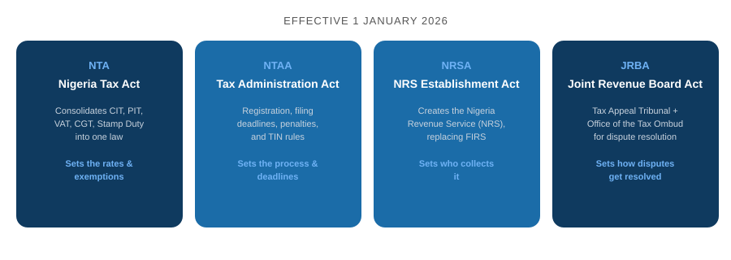
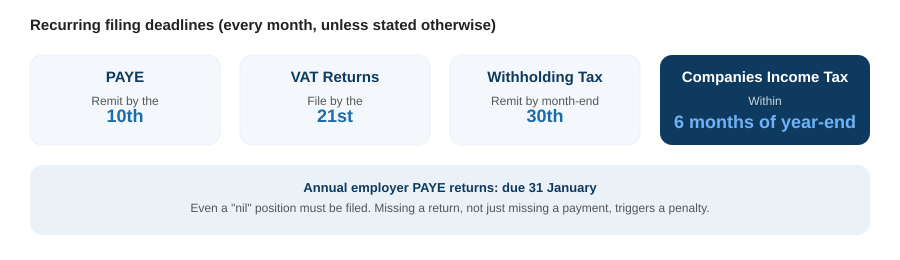

If you run a business in Nigeria, the tax rules you learned under the old system changed on 1 January 2026. Four new laws replaced a patchwork of older tax statutes, renamed the tax authority, and rewrote the penalties for getting registration and filing wrong. Enforcement is no longer theoretical either. The transitional grace period has ended, and the tax authority has moved into active enforcement.
This guide covers what actually changed, which taxes apply to your specific type of business, what's due and when, and what non-compliance costs in practice.
The four laws behind the reform
President Bola Ahmed Tinubu signed four connected bills into law on 26 June 2025, collectively known as the Tax Reform Acts. They took effect on 1 January 2026.

- The Nigeria Tax Act (NTA) repeals and consolidates the Companies Income Tax Act, Personal Income Tax Act, Petroleum Profits Tax Act, VAT Act, Capital Gains Tax Act, and Stamp Duties Act into one unified law. It sets the actual rates, exemptions, and reliefs.
- The Nigeria Tax Administration Act (NTAA) governs how tax is administered: registration, TIN rules, filing deadlines, and penalties. If the NTA tells you what you owe, the NTAA tells you how and when to deal with it.
- The Nigeria Revenue Service (Establishment) Act (NRSA) creates the Nigeria Revenue Service (NRS), which now performs the functions the Federal Inland Revenue Service (FIRS) used to handle. You'll still see both names in circulation for a while, but NRS is the current authority.
- The Joint Revenue Board (Establishment) Act (JRBA) sets up the Tax Appeal Tribunal and the Office of the Tax Ombud, giving taxpayers a formal, faster route to resolve disputes without going straight to litigation.
Who has to register, and for what
Under the NTAA, registration is broader than most people expect. It's not just companies.
Taxable individuals, companies, partnerships, trustees, and even Ministries, Departments, and Agencies of government are all required to register and obtain a Tax Identification Number. Non-resident persons who supply taxable goods or services into Nigeria, or who derive income here beyond passive investment returns, also have to register.
In practice, this is what applies to different types of businesses:
| Entity type | What applies | Key rate or threshold |
|---|---|---|
| Individual / employee | PAYE (via employer) or direct personal income tax | First ₦800,000 of annual income is tax-free, then 15% to 25% progressively |
| Small company (turnover ≤₦50m, fixed assets ≤₦250m, non-professional services) | Companies Income Tax | 0% CIT, but VAT still applies where taxable supplies are made |
| Standard company | Companies Income Tax, VAT, WHT, Development Levy | 30% CIT, 7.5% VAT, 4% development levy on assessable profits |
| Large company / MNE group | CIT plus a minimum effective tax rate | 15% minimum ETR once turnover crosses a high threshold, to stop profit-shifting |
| Non-resident supplying into Nigeria | VAT registration, withholding tax, permanent establishment rules | Taxed on Nigeria-sourced income and significant economic presence |
A common misconception worth correcting directly: the small-company CIT exemption does not carry over to VAT. Even a company paying 0% Companies Income Tax still has to register for VAT, charge it, file returns, and remit whatever it collects, if it makes taxable supplies. The turnover threshold that exempts small companies from CIT simply doesn't apply to VAT at all.
What changed for individuals
The personal income tax exemption threshold nearly tripled, from ₦300,000 to ₦800,000 of annual income. Above that, rates run progressively from 15% up to 25% depending on income level. The old Consolidated Relief Allowance is gone, replaced by a rent relief: 20% of annual rent paid, capped at ₦500,000, whichever is lower.
Employers should also note that the PAYE base has been widened to capture more forms of remuneration than before, and the NTA introduces stiffer penalties specifically for employers who under-deduct or delay remitting employee tax.
What changed for companies
The small company definition has been raised: turnover of ₦50 million or less, and fixed assets of ₦250 million or less, excluding professional services firms, now qualifies for 0% Companies Income Tax. Everyone above that pays 30%. The old "medium company" tax band has been removed entirely, so it's now a two-tier system rather than three.
Large companies and multinational groups above a high turnover threshold face a 15% minimum effective tax rate, aimed squarely at preventing profit-shifting into low-tax jurisdictions. If a company's actual effective rate falls below that floor, a top-up tax closes the gap.
A new unified development levy of 4% on assessable profits replaces a cluster of separate earmarked taxes that used to be collected individually, including the Tertiary Education Tax, the NASENI levy, and the Police Trust Fund levy. Small companies and non-resident companies are excluded from this levy.
VAT stays at 7.5%, despite earlier proposals to raise it. What has changed is the scope of zero-rating: basic food items, educational materials, medical products, and exports are now zero-rated rather than simply exempt, which matters because zero-rated businesses can still claim back input VAT, where exempt businesses generally couldn't.
Filing deadlines you actually need to track

- PAYE: remit by the 10th of the following month.
- VAT returns: file by the 21st of the following month, whether or not any taxable activity actually took place that month.
- Withholding tax: generally remitted by month-end, though the exact day can vary by the type of payment.
- Companies Income Tax: filed within six months of the end of your company's accounting year.
- Annual employer PAYE returns: due by 31 January each year.
A "nil" position still has to be filed. If your business had no taxable activity in a given month, that doesn't excuse you from submitting a return. It's the return itself, not just the payment, that avoids the penalty.
Validation and digital compliance
TIN validation now matters more than it used to, since banks and other institutions offering financial services are required to confirm that every taxable person they deal with has a valid TIN on file. If you're not sure your existing TIN is correctly registered against your current business details, that's worth checking before it holds up something else, like a bank account or a contract.
The bigger structural shift is digital. The NTAA introduces an Electronic Fiscal System (EFS) requirement, meaning taxable persons need to maintain accurate digital records of transactions processed through it. VAT-registered businesses are also moving toward e-invoicing and fiscalisation, where invoices are validated in real time by the tax authority's system. This is currently in a pilot phase for companies with ₦5 billion or more in annual turnover in select sectors, and it's expected to expand over time. If your business is anywhere near that size, it's worth getting ahead of this rather than waiting for it to become mandatory.
What non-compliance actually costs
This is the part that changed most sharply. The new penalty regime is built to make non-compliance more expensive than simply staying on top of it.
| Offence | Penalty |
|---|---|
| Failure to register for tax | ₦50,000 for the first month, ₦25,000 for each month after |
| Failure to file returns (including nil returns) | ₦100,000 for the first month, ₦50,000 for each month after |
| Late remittance of withholding tax | Original tax owed, plus 10% penalty, plus interest at the CBN's rate |
| VAT fiscalisation / e-invoicing non-compliance | ₦200,000, plus 100% of the tax due, plus interest |
| False refund claims | 100% of the amount claimed, plus interest |
| Obstruction of tax officers | ₦1,000,000 administrative penalty, with potential imprisonment |
| Any other offence with no specific penalty stated | ₦100,000, or imprisonment of up to 3 years, or both |
Under Section 122 of the tax laws, VAT collected from customers legally stops being your money the moment you collect it. Using it as working capital is treated as misappropriation, not a cash-flow decision.
Specific sectors face heavier penalties again. Virtual Asset Service Providers face an administrative fine of ₦10 million for the first month of default and ₦1 million for every month after, alongside possible suspension of their operating licence by the Securities and Exchange Commission. Companies in upstream petroleum operations face similarly steep penalties measured in millions of naira per day of continued default.
If you disagree with an assessment
The Tax Appeal Tribunal, established under the Joint Revenue Board Act, is now the formal route for tax disputes, with expanded powers and its own procedural timelines. If you receive an assessment you believe is wrong, you have 30 days from the date of the assessment notice to file a formal objection. Miss that window, and you lose the right to appeal it later, regardless of how strong your case might otherwise have been. There's also now a Taxpayer Bill of Rights and an Office of the Tax Ombud, giving businesses a channel to raise administrative unfairness without going straight to court.
Frequently asked questions
Do I need a new TIN if I already had one before January 2026?
Not automatically, but it's worth validating that your existing TIN is correctly linked to your current business details under the new system, particularly if your CAC registration details have changed since you first registered for tax.
My company made no sales this month. Do I still need to file VAT?
Yes. A nil return still needs to be filed by the 21st of the following month. The penalty for failing to file applies regardless of whether there was any taxable activity to report.
Is my small business exempt from VAT if it qualifies for the 0% CIT rate?
No. The small company threshold applies to Companies Income Tax, not VAT. If your business makes taxable supplies, VAT registration, charging, filing, and remittance obligations apply regardless of your CIT status.
What actually happens if I just miss a filing deadline once?
A single missed filing typically triggers the first-month penalty for that tax type, commonly ₦100,000 for a missed return. The penalty escalates for each additional month the default continues, so the cost of catching up grows the longer it's left.
Staying compliant without tracking it all yourself
Between TIN registration, VAT and PAYE filing cycles, and a penalty regime that now escalates monthly, keeping every deadline straight is a genuine operational task, not a once-a-year errand. Awal Global Consults handles TIN registration and validation, VAT and PAYE filing, and tax clearance certificates for businesses that would rather have this managed properly than risk finding out about a gap during an audit.
Need help with this?
Awal Global Consults handles TIN registration, TIN validation, VAT and PAYE filing, and tax clearance certificates, so your business stays compliant under the new regime without you having to track every deadline yourself.